🌿 Legado Verde 🌿"Paisagismo e Jardinagem Artesanal" 🏡Início | 🌱Sobre | 📞Contato | 🌸Imagens | 🧤Nossos Serviços⚡Contato Direto |

|
Tudo começou com um pequeno jardim no quintal. Entre vasos antigos e sementes esquecidas, nasceu um sonho: transformar simples pedaços de terra em refúgios de vida, cor e esperança. O fundador do Legado Verde sempre acreditou que cada planta tem uma história para contar — uma memória de quem a plantou, uma promessa de quem vai cuidar dela. O que começou como um hobby de fim de semana tornou-se uma missão: devolver à natureza o que dela recebemos todos os dias. Ao longo dos anos, o Legado Verde cresceu, assim como suas raízes. Hoje, cada projeto de jardinagem e paisagismo que criamos é mais do que uma obra estética: é um gesto de gratidão à Terra, um convite à contemplação e um lembrete de que a beleza mais verdadeira é aquela que floresce em harmonia com o meio ambiente. Acreditamos que cada jardim é um legado — um presente para as futuras gerações. E é isso que nos move: cultivar não apenas plantas, mas também histórias, laços e emoções. Quando o sol se põe sobre um jardim que ajudamos a criar, sabemos que o trabalho valeu a pena. Porque ali, entre folhas, flores e perfumes, pulsa o coração do Legado Verde — um lugar onde a natureza e o ser humano voltam a falar a mesma língua. "Porque todo mundo merece ver a vida florescer." |
© 2025 Legado Verde — Todos os direitos reservados.